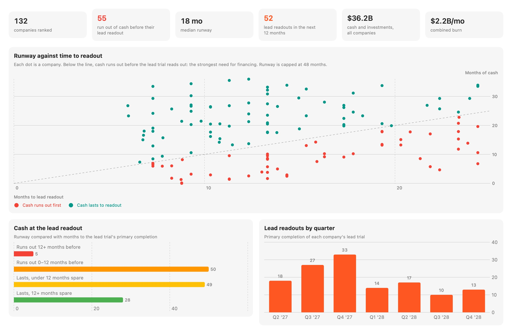
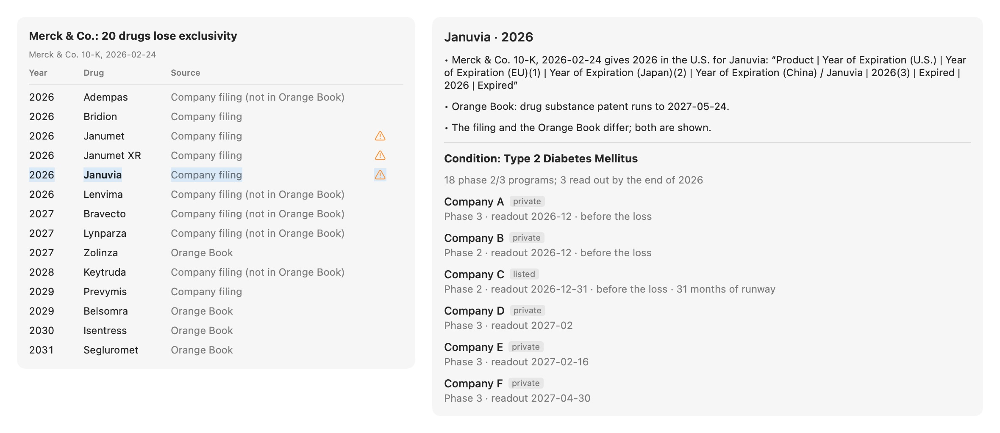

Find the biotech companies to back, buy or partner with, before the market does.
TrialCarta Pro reads trial registries, company filings and the literature together and ranks drug developers with a readout coming and cash that may not last until then, listed and private. Map every program going after a target, see which large companies need to buy, and follow acquisitions and comparable deals. Royalty, credit and business development teams see the next deals before they come to market.

Financing Screen analytics from a live run on public data, company names left out.
Where it fits in your diligence
From every trial on the registry to the investment committee. TrialCarta does the public-data grind across hundreds of companies, then works next to your confidential material once you're inside a deal.
Counts from a live screen run in November 2026. TrialCarta doesn't value assets or replace your licensed databases, expert calls or model: it's the research aid around them.
Find
Who needs capital, who's new, who else is going after a target, and who needs to buy.
Financing Screen
A ranked list of drug developers with a phase 2 or 3 readout in the window you choose: readout timing, cash, runway, and whether the cash lasts to the readout. Next 90 Days screens for readouts in the next three months. Analytics, Excel, CSV, slides and a PDF brochure to share.
Private companies too
Sponsors that aren't listed don't publish financial statements. TrialCarta shows what public records say about how they're funded and when they last raised.
New companies, on your radar
Sponsors whose first trials were just posted, how they're funded and what's published on the drug. Keep the ones you like on your radar and hear when they move.
Target landscape
Every industry program against a target or mechanism, in all phases: sponsor, modality, most advanced phase, next readout and runway, with congress abstracts counted. See it.
Buyer fit
Which large drug companies lose exclusivity on a drug soon, and the clinical-stage programs in that drug's condition, with each sponsor's cash runway. See it.
Alerts every week
Watched screens, companies and drugs are re-checked weekly: readouts due in the next 90 days, new raises, readouts that moved, trials stopped or completed, endpoints changed, results posted, going-concern wording, royalty deals and new press releases.
Everyone going after a target
Finance ▸ Landscape takes a target's names (CLDN6, claudin 6) and finds every industry trial on ClinicalTrials.gov that names it, in all phases, grouped into programs: sponsor, modality when the record states it, most advanced phase, number of trials, the next registered readout, and each listed sponsor's cash and runway from its SEC filings.
- Sponsors whose cash runs out before their readout are flagged.
- Matching is strict: one-word names match exactly, and longer names must appear in the trial's own record, so claudin 18.2 trials don't come in for claudin 6. Add program codes to pick up trials whose records don't name the target.
- Congress abstracts. ASCO, ESMO, AACR, ASH, SITC and EHA abstract supplements from the last 30 months, searched for the target and the programs' codes and counted per program. Titles only, each linked to the abstract.
- Save programs to a short list, export editable PowerPoint, Excel, Markdown or CSV, or open a chat with the landscape attached.
Who needs to buy
Pick a large drug company and see its drugs losing exclusivity in the next few years, with the year from the company's own annual report or FDA's Orange Book. Then, for any of those drugs, the phase 2 and 3 programs in its condition, ordered by rule: reading out before the loss, phase 3 first, cash running out before the readout.
- Each year quotes the company's filing or the Orange Book listing. When the two disagree, both are shown.
- Programs come with each listed sponsor's cash and runway from its SEC filings; private sponsors are marked.
- From the other side: a drug's profile shows which large companies lose a drug in the same condition.
- Watch a company to hear when a year moves or a new annual report is out. Facts, not predictions.

Buyer Fit from a live run on public data in November 2026; program sponsors left out. Click to enlarge.
Diligence
A company's dates, cash, holders and news on one card, the FDA and exclusivity calendar, and a check that your memo still holds.
Every company on one card
Switch the screen to Cards and each company's dates sit side by side: its readouts, FDA decision dates, the month its cash runs out at today's burn, and what the company itself says about timing. One click on Next 90 Days screens for readouts in the next three months.
- See at a glance whether the cash lasts to the readout that matters.
- Warning signs stand out: going-concern language, a partner handing a drug back, a new offering and how much it diluted.
- For the top 15 companies, new 5%+ stakes and insiders' open-market purchases and larger sales appear on the card; for the top 40, the newest press releases, marked Data, FDA, Deal, Financing or Company. Each links to its filing.
- Company guidance is quoted as written and set against the registered readout, so a gap shows.
- Every row links to its source. One click opens a chat about the company.

Cards from a live run on public data, company, drug and trial names left out. Click to enlarge.
The dates that move a deal
FDA decisions, readouts and the end of exclusivity, from the filings and registries that state them, each one linked to its source.
Catalyst calendar
Build a calendar for a condition or for everything you watch: trial readouts, FDA decision (PDUFA) dates the companies stated in their own filings, and when exclusivity and patents end. Grouped by month, six months to five years ahead.
- Each FDA date quotes the sentence it came from and links to the filing.
- Add the dates to Outlook, Google or Apple Calendar, or export a PDF or Markdown.
- Dates are found by rules, not an AI model, so the same filings give the same dates.

A live run on public data. Click to enlarge.
Patents and exclusivity in every drug profile
A drug's profile brings its FDA approvals, trials, publications and mentions in company filings onto one page, with its listed patents and exclusivity: when new chemical entity exclusivity ends, when a generic company can first file a patent challenge, and when the last listed patent runs out.
- Watch a drug to hear when its trials change, and to put its dates on your calendar.
- For biologics, an estimate of the 12-year exclusivity from approval.

A Drug Profile from a live run on public data.
Is your memo still right?
Check a diligence memo, forecast or investment thesis against what the registry and company filings say today. TrialCarta finds the statements that depend on public facts (a trial's readout date, enrollment, primary endpoint or status, and FDA decision dates) and marks each one Changed, Holds or Can't check, with the source.
- Verdicts are decided by rules, not an AI model. Your document isn't changed.
- The AI then drafts new wording for what changed, with every quote checked against your document.
- Keep the memo on your radar to hear when a claim stops holding.
- Only trial IDs and drug names are searched for. The memo stays on your machine.
How to check a memo's trial dates, by hand or with TrialCarta
| Verdict | Your memo says | Now |
|---|---|---|
| Changed | “Topline data are expected in mid-2026.” (NCT06842823) | Primary completion registered for Dec 2026 |
| Changed | “…donidalorsen (NCT05392114), which is currently enrolling.” | Active, not recruiting |
| Changed | “PDUFA target action date of February 28, 2027” (lonvo-z) | March 10, 2027, quoted from Intellia's filing of Nov 5, 2026 |
| Holds | “…enroll approximately 150 patients.” (NCT06842823) | 157 participants (actual) |
From a test memo checked against public data on November 10, 2026.
A brief on any company
Ask for a financing brief: the lead asset's evidence, the readout ahead, runway and obligations. Every figure cites its filing or trial record, and citations are checked before you see them.
Holders and insider trades
Funds reporting a 5%+ stake, 13D or 13G, and officers' and directors' open-market purchases and sales from Form 4, for any listed company.
Press releases
A company's releases from the last 90 days, from its 8-K filings and its investor site's news feed, each marked by kind, with slide decks listed as presentations.
One page per company, five years deep
Type a company or ticker in Finance ▸ Company and TrialCarta lays out five years of it from public sources, every line linked to the trial or filing it came from.
- Quarterly cash, net loss, R&D, revenue and shares outstanding from SEC's XBRL data, with runway at the recent burn and dilution over the period.
- The pipeline from ClinicalTrials.gov, one row per drug however its trials name it, with partner and comparator drugs left out.
- A track record: trials started, completed and stopped and why, results posted when due, and readouts past their registered date.
- Offerings with the terms on each prospectus cover, shelf registrations, agreements, leadership changes, results releases, holders, insider trades and royalty deals.
- Chat with the whole profile attached, or export it as PDF, Excel or Markdown.
Track record, five years
| Raising money | From the prospectus cover |
|---|---|
| 2026 · 424B5 | 7.9M shares at $35.00, about $275M gross |
| 2024 · 424B5 | 6.5M shares at $85.00, about $550M gross |
| 2023 · 424B5 | 17.2M shares at $14.50, about $250M gross |
From a live profile of one listed company in November 2026, name left out. The page also charts 20 quarters of cash and losses and lists its pipeline, filings and trials.
Press release vs the registry
Click Check vs Registry beside a company's data or FDA release and TrialCarta compares what it says with each trial's ClinicalTrials.gov record, quoting both sides.
- The phase it names, the enrollment, and the primary endpoint, including a "primary" endpoint that's registered as secondary.
- Results announced before the registered primary completion, or while the registry still says recruiting.
- No trial ID in the release? It's matched by the drug code and the trial's name or timing, and the match is shown for you to confirm.
- Rules, not AI. A difference is a question for management, not proof of a misstatement.
| Verdict | The release says | The registry says |
|---|---|---|
| Check Enrollment | "…a randomized, double-blind, placebo-controlled trial in approximately 180 adults with obesity" | 280 participants (actual) |
| Check Trial | No trial ID in the release; it names the drug code | Matched to the drug's completed phase 2 trial by code and timing |
| Differs Primary endpoint | "The primary endpoint was MASH resolution without worsening of fibrosis at Week 52." | Registered as a secondary endpoint; the primary is fibrosis improvement |
First two rows from a live check of a company's topline release in November 2026, names left out; the third is from the app's tests.
Who owns the royalty?
Load Royalties on a company and TrialCarta reads six years of its 8-Ks, 10-Ks and 10-Qs for the royalty and revenue-interest sales it disclosed, and the royalties it owes the companies it licensed its drugs from.
- Buyer, money received, share of sales, cap and product, each quoted from its filing.
- The same deal across an 8-K, a 10-K and later 10-Qs is shown once; accounting lines that only restate it are skipped.
- Terms a filing redacted or doesn't state are shown as not disclosed, never estimated.
| Filed | What the filings say | |
|---|---|---|
| Sold | 2026 | A royalty fund paid $70.0 million for royalties on the company's partnered drug |
| Sold | 2026 | The same fund paid $60.0 million more on the same drug (amended agreement) |
| Sold | 2023 | Another royalty buyer paid $100.0 million for a single-digit royalty on a second drug |
| Owed | 2025 | Low single-digit royalties owed to a third party |
From a live run on one company's public filings in November 2026, names left out. In the app, each row links to its filing.
Deals
Pending acquisitions and what comparable deals paid, the terms in licensing and royalty agreements, and short lists to take to the meeting.
Pending acquisitions, from the filings
Finance ▸ Mergers lists pending acquisitions of listed drug and biotech companies found on SEC EDGAR: merger proxies, tender offers and new merger agreements. Each deal shows the buyer, the price and any CVR, the premium and deal value as the filing states them, the vote or tender expiry, expected timing and outside date, termination fees and approvals needed.
- Each deal's filings are followed after signing, so the milestones line up by date: proxy filed, vote held, tender extended, antitrust cleared, deal closed or ended.
- Terms are read by text patterns, and optionally by the model on your Mac; every price and date the model gives has to appear in the filing.
- Comparables. Completed and pending deals side by side, with the premium and value each filing states, their medians and ranges, how many carried a CVR, and how long completed deals took to close. Filter by status, years and deal value.
- Next to each deal, its recent press releases and the target's 5%+ holders and insider trades from the last year.
- Export the list or the comparables as PowerPoint, Excel or CSV, or open a chat with the deal's facts and milestones attached, e.g. "What could still stop this deal, and when?"
Short lists, and slides for the meeting
Save companies, programs and deals from the Financing Screen, Landscape and Mergers to named short lists, each with your note. Entries keep their details as they were when added, with where each came from and a link to its source.
- Editable PowerPoint. The screen, its top company cards, a landscape, Buyer Fit, the catalyst calendar, acquisitions, comparables, short lists and trial searches export as real PowerPoint tables, every row linked to its source and every slide saying where the data came from. Opens in PowerPoint, Keynote and Google Slides.
- Attach a short list to a chat: "Which of these should I call first, and why?"
An investment memo for the committee
From any company profile, export a memo: cash, burn and runway, the pipeline, readouts in the next 12 months, track record, offerings and royalty deals, and comparable acquisitions from Mergers with their median premium and value. Built by rules from SEC filings and ClinicalTrials.gov, each figure with its source, as PDF or Markdown.
Ask the data room
Add a data room's agreements, clinical study reports, protocols and investor materials and ask about economic terms, milestones, termination and change of control, exclusivity or results. Answers quote the documents with page numbers, every quote is checked word for word against its page, and amounts are given as written, or marked not stated or redacted. Nothing leaves your Mac.
Deal terms from filings
Search company filings for licensing, royalty and financing agreements and see the upfront, milestone and royalty terms quoted from the filing itself.
Alerts on deals and news
Hear when a watched company files a new offering, ends an agreement, issues a press release about data, the FDA, a deal or financing, or leaves the screen.
See the output before you talk to us
A target landscape for CLDN6 as TrialCarta exports it: 14 industry trials, 10 programs and 27 congress abstracts, run on public data in November 2026. For this sample, sponsor names are replaced with letters and cash and runway are left out; in the app they're shown, each linked to its filing.
Why you can rely on it
- Public sources, read fresh. Public trial registries, company filings and the published literature, retrieved each time you run it. Every number links back to where it came from.
- Tested on history. Run as of mid-2021 and early 2023, the ranking put two to three times more of the companies that went on to sell a royalty in its top ten than a random pick would. How it's tested, and its limits.
- Rules for the numbers, AI for the reading. Cash, runway and rankings come from fixed rules you can check. The AI model writes briefs from the records, and every citation is verified against them.
- Your deal work stays with you. TrialCarta runs on your Mac, AI model included. Only the public searches go out; your documents, questions and notes never leave the computer.
Bring your own data
The screen, calendar and briefs run on public sources. Your deal work can sit right next to them: point TrialCarta at a folder and it reads your documents on your Mac. For teams, we offer a fixed-scope setup that connects your internal sources (shared drives, models and memos, competitive-intelligence notes, and licensed databases you already subscribe to, where your license allows) and builds watchlists for your pipeline and portfolio. It's set up on your machines, and your data stays there.
Ask about a setupBuilt for
Royalty and structured finance
Source companies with strong evidence and a funding need ahead of the readout.
Venture debt and credit
See runway against milestones, and hear when a borrower raises or a trial slips.
Biotech investors
Track readouts, financings and new private companies across a whole indication.
Pharma BD and licensing
Spot partners that may want a deal before their data, see which large companies lose a drug in your asset's condition, read the terms of comparable deals, and follow pending acquisitions.
How it's licensed
TrialCarta Pro is the main plan, for one person or a team, priced per person per year. It includes everything: the finance views, data room review and the clinical document tools. Study teams that only need the clinical tools can license TrialCarta without Pro, and Enterprise licenses include it all. TrialCarta runs on a Mac, and a trial copy includes everything in Pro so you can try it on your own questions.
Figures come from public data and are approximate. TrialCarta is a screening and research aid, not investment advice: check figures against the filings before relying on them.
Common questions
Where does the data come from?
Public sources only: public trial registries, company filings and the published literature, read fresh each time you run it. Every figure links to where it came from.
Do our deal documents leave our office?
No. TrialCarta runs on your Mac, including the AI model. Only the public searches go out; your documents, questions and notes stay on the computer.
Can TrialCarta use our internal data?
Yes. Point it at a folder and it reads your documents on your Mac, next to the public sources. For larger setups, we connect your internal sources and the licensed databases you already subscribe to during onboarding, on your machines. Nothing is uploaded to us.
Where do the FDA decision dates come from?
From the companies' own public filings: TrialCarta finds the PDUFA date a filing states, quotes the sentence and links to the filing. Companies that don't state a date aren't covered, and FDA can act before or after the date.
Where do the acquisition terms and insider trades come from?
From SEC EDGAR: the target's merger proxy, tender offer and 8-Ks for deals, Schedules 13D and 13G for 5%+ holders, and Form 4 for insider trades. Premiums and deal values are shown only as the filing states them, and each item links to its filing.
Where do the congress abstracts and press releases come from?
Abstracts are found by title through Crossref in the ASCO, ESMO, AACR, ASH, SITC and EHA supplements; titles only, so an abstract that doesn't name the target or program code in its title isn't found. Press releases come from the company's 8-K filings on SEC EDGAR and, when you click Load News, from the news feed on its own investor site.
What can we export?
Editable PowerPoint with real tables, so you can apply your own template; PDF, including a shareable financing brochure; Excel workbooks, with numbers and dates you can sort and sum, trial ids and sources as links, and the header frozen with filters; CSV; and Markdown. Catalyst dates go straight into Outlook, Google or Apple Calendar.
How does the press release check work?
It reads the release and the ClinicalTrials.gov record of each trial it names (or, without a trial ID, the drug's trial matched by code and name or timing), and compares phase, enrollment, the primary endpoint, timing and status by rules. Both sides are quoted. A difference is a question to ask, not proof of a misstatement.
How do you know who owns a royalty?
From the company's own SEC filings: TrialCarta searches six years of its 8-Ks, 10-Ks and 10-Qs for royalty and revenue-interest sales and royalty obligations, and quotes the sentences. A deal a company never disclosed, or described only in other words, won't show.
Does it cover companies outside the US?
Their trials, yes. Cash and runway cover companies listed in the US, and private funding covers US private raises.
Can we try it?
Yes. Ask for a demo on this week's data, or for a sample brochure, and we'll send a trial copy.
See it on this week's data
We'll run the Financing Screen live, map a target's landscape, pull comparable deals, and export it all to slides.
Ask for a demo